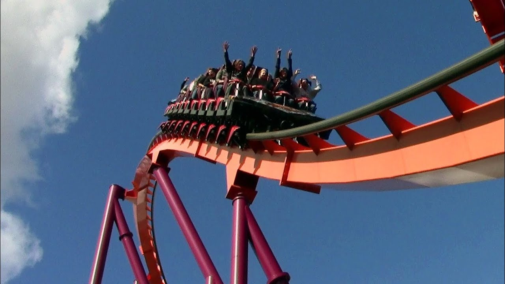

Raging bull is a rollercoaster at six flags great america
"Raging Bull is a steel hypercoaster located in Southwest Territory at Six Flags Great America in Gurnee, Illinois. The ride was designed by Werner Stengel and manufactured by Bolliger & Mabillard, and opened on May 1, 1999. - Wikipedia"
American Eagle is a rollercoaster at six flags great america
"This classic wooden beast is the world’s tallest and fastest racing wooden coaster, and has been an all-time favorite of true coaster fanatics for over 30 years. A double track means two trains can fly through this 4,650-foot-long run at the same time, so climb aboard either Eagle Red or Eagle Blue and prepare for the race of a lifetime. Side by side and simultaneously, the Red and Blue trains begin their ascent up the lift hill. No matter which side you’re on, you’ll first have to climb up 127 feet."
Demon is a rollercoaster at six flags great america
"Originally called Turn of the Century, this high-speed looping coasting was one of the first roller coasters in the world to feature a double corkscrew. On this 2,130-foot-long devil, you immediately shoot through a dark tunnel, heading toward a bright light and are immediately thrust upward, climbing higher and higher up 10 stories. Suddenly without warning, you blast forward, down a steep drop and around a fierce loop."
"Originally called Turn of the Century, this high-speed looping coasting was one of the first roller coasters in the world to feature a double corkscrew. On this 2,130-foot-long devil, you immediately shoot through a dark tunnel, heading toward a bright light and are immediately thrust upward, climbing higher and higher up 10 stories. Suddenly without warning, you blast forward, down a steep drop and around a fierce loop."